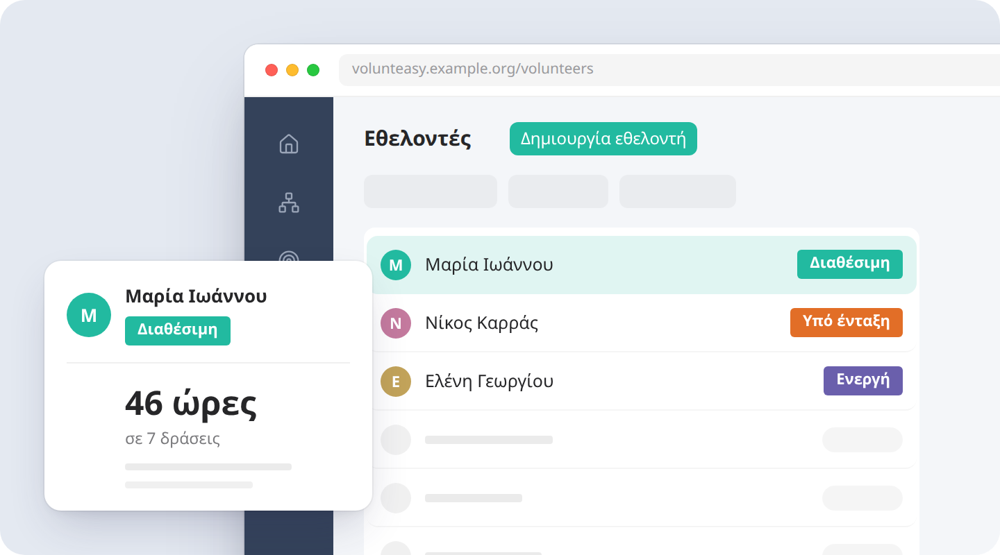
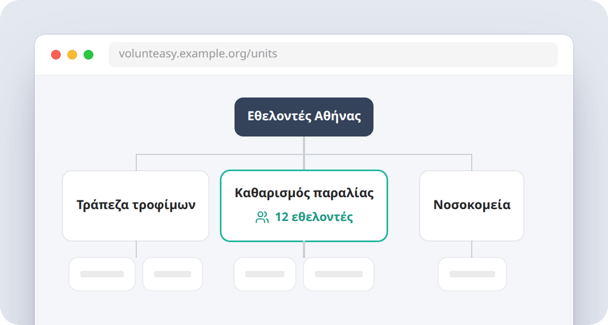
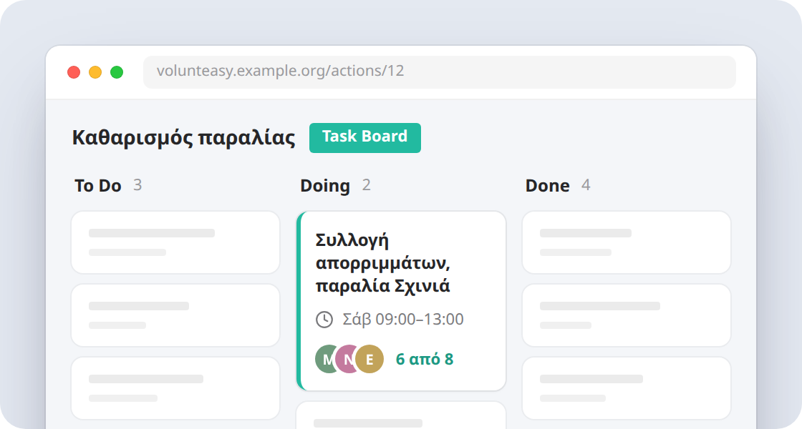
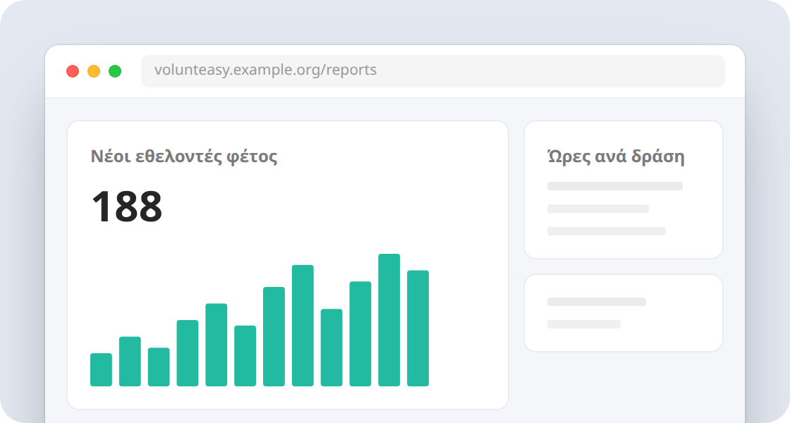

Δωρεάν και ανοιχτού κώδικα · Apache 2.0
Διαχείριση εθελοντών που η ομάδα σας θα χρησιμοποιεί πραγματικά
Το VoluntEasy κρατά τους εθελοντές, τις ομάδες και τις δράσεις σας σε ένα σημείο. Καταγράψτε εθελοντές, συνοδέψτε τους στην ένταξή τους, οργανώστε βάρδιες και δείτε πόσες ώρες προσέφεραν.
- Laravel 13 · PHP 8.3+
- MySQL ή MariaDB
- Ελληνικά και αγγλικά

Για μη κερδοσκοπικούς οργανισμούς, δήμους, ΜΚΟ και κοινωνικές ομάδες που συντονίζουν πολλούς εθελοντές σε ομάδες και δράσεις.
Όλα όσα χρειάζεται ένα πρόγραμμα εθελοντισμού
Από την πρώτη εγγραφή μέχρι το ευχαριστήριο μήνυμα μετά τη δράση.
Γνωρίστε κάθε εθελοντή
Πλήρες προφίλ για κάθε εθελοντή: στοιχεία επικοινωνίας, δεξιότητες, γλώσσες, ενδιαφέροντα, διαθεσιμότητα, αρχεία και ιστορικό. Αναζητήστε με οποιοδήποτε πεδίο και δείτε με μια ματιά ποιος είναι υπό ένταξη, διαθέσιμος ή ενεργός σε κάθε μονάδα.
- Δημόσια φόρμα εγγραφής και API για τον ιστότοπό σας
- Κατάσταση ανά μονάδα, με περιόδους «μη διαθεσιμότητας»
- Χρονολόγιο κάθε μονάδας, δράσης και αλλαγής κατάστασης

Οργανωτικές μονάδες
Αποτυπώστε τον οργανισμό σας ως δέντρο μονάδων και υπομονάδων. Κάθε μονάδα έχει τους δικούς της υπευθύνους και τα δικά της βήματα ένταξης, για παράδειγμα μια πρώτη επικοινωνία, μια συνέντευξη και μια εκπαίδευση. Ο εθελοντής γίνεται διαθέσιμος όταν ολοκληρώσει τα βήματα.
- Οι υπεύθυνοι βλέπουν και επεξεργάζονται μόνο τις μονάδες τους
- Ρόλοι: διαχειριστής, υπεύθυνος μονάδας, υπεύθυνος δράσης

Δράσεις και βάρδιες
Κάθε δράση έχει τον δικό της πίνακα εργασιών. Χωρίστε τη δουλειά σε εργασίες και υποεργασίες, προσθέστε βάρδιες με τον αριθμό των εθελοντών που χρειάζεστε, κρατήστε λίστες ελέγχου και αναθέστε τις σε ανθρώπους. Δημοσιεύστε μια σελίδα πρόσκλησης, ώστε νέοι εθελοντές να διαλέξουν βάρδια.
- Μετακινήστε τις υποεργασίες από το To Do στο Done
- Βάρδιες με ημερομηνίες, ώρες και αριθμό εθελοντών
- Δημόσιες σελίδες για να δηλώσουν συμμετοχή οι εθελοντές

Μετρήστε το αποτέλεσμα
Μετά από μια δράση, το VoluntEasy στέλνει ένα σύντομο ερωτηματολόγιο στους εθελοντές και στον υπεύθυνο. Οι αναφορές δείχνουν νέους εθελοντές ανά μήνα, ηλικιακές ομάδες, πόλεις, μορφωτικό επίπεδο και τις ώρες εθελοντισμού ανά δράση.
- Αξιολογήσεις δράσεων και εθελοντών
- Διαγράμματα και πίνακες για εκτύπωση ή εξαγωγή σε CSV
- Ειδοποιήσεις μέσα στην εφαρμογή για τους υπευθύνους
Πώς λειτουργεί
Οι εθελοντές εγγράφονται
Από τον ιστότοπό σας, με τη δημόσια φόρμα, ή από την ομάδα σας.
Οι μονάδες τους υποδέχονται
Οι υπεύθυνοι συνοδεύουν κάθε νέο εθελοντή στα βήματα ένταξης της μονάδας.
Οι δράσεις στελεχώνονται
Οι διαθέσιμοι εθελοντές αναλαμβάνουν εργασίες και βάρδιες, ή τις επιλέγουν οι ίδιοι στη σελίδα πρόσκλησης.
Όλοι παίρνουν ανατροφοδότηση
Οι αξιολογήσεις και οι αναφορές δείχνουν τι πήγε καλά και ποιοι βοήθησαν, ώστε να τους ευχαριστήσετε.
Ανοιχτό, ιδιωτικό και δικό σας
Πάντα δωρεάν
Άδεια Apache 2.0. Χρησιμοποιήστε το, αλλάξτε το και τρέξτε το για όσους εθελοντές έχετε.
Τα δεδομένα μένουν σε εσάς
Φιλοξενήστε το στον δικό σας διακομιστή. Χωρίς παρακολούθηση, χωρίς scripts τρίτων, χωρίς υποχρεωτικές εξωτερικές υπηρεσίες.
Σύγχρονο και συντηρούμενο
Laravel 13 σε PHP 8.3+, απλή JavaScript, στατική ανάλυση με Larastan και αυτόματοι έλεγχοι σε κάθε αλλαγή.
Προσαρμόζεται στον οργανισμό σας
Οι «εκδοχές» εγκατάστασης αλλάζουν τη φόρμα εθελοντή, τις αξιολογήσεις και τις αναφορές χωρίς να αλλάξει ο πυρήνας.
Ξεκινήστε σε λίγα λεπτά
Χρειάζεστε PHP 8.3 ή νεότερη, Composer και MySQL ή MariaDB. Ο πλήρης οδηγός είναι στο README (στα αγγλικά).
git clone https://github.com/scify/VoluntEasy.git
cd VoluntEasy/VoluntEasy
composer install
cp .env.example .env
php artisan key:generate
php artisan migrate --seed
php artisan serveΒοηθήστε μας να κάνουμε τον εθελοντισμό πιο εύκολο
Το VoluntEasy αναπτύσσεται ανοιχτά. Αναφέρετε ένα σφάλμα, προτείνετε μια δυνατότητα, μεταφράστε το στη γλώσσα σας ή στείλτε ένα pull request.